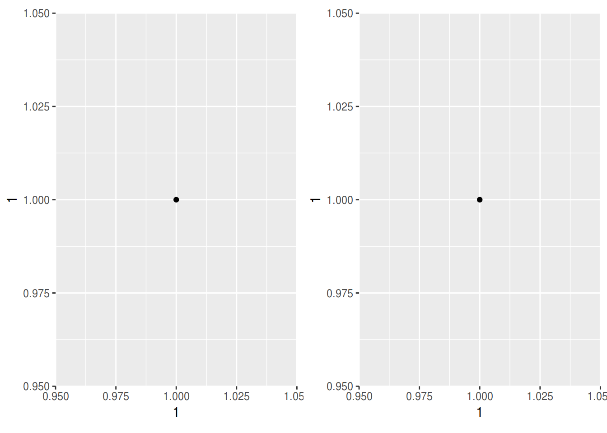
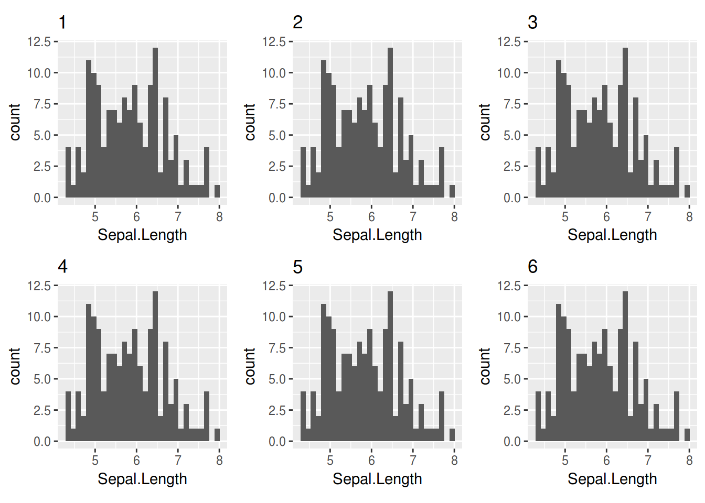
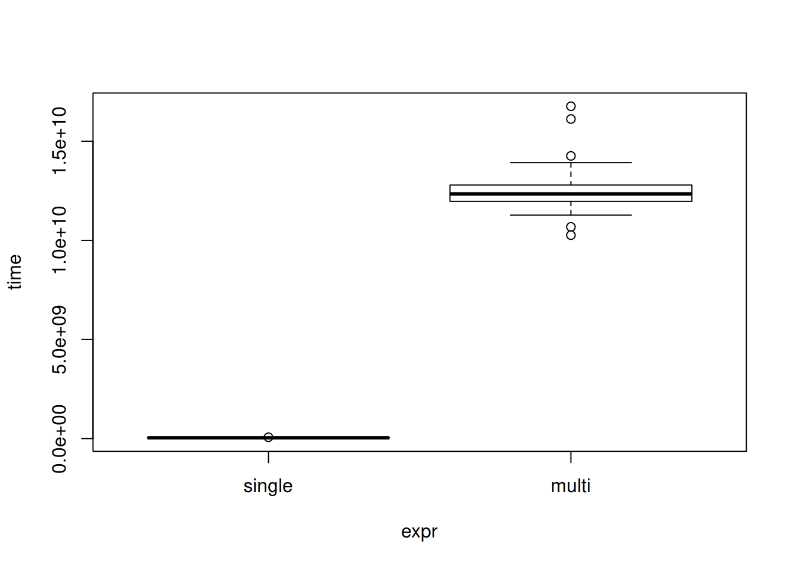

失敗の記録．
目的
ggplotのリストの表示を高速化するで紹介した通り， ggplotオブジェクトはprintされる段になって，プロットに必要な計算を行っているため，大量のggplotを行うならば，計算部分を並列化し，表示を順次行うのが効率的だ． patchworkを使ってggplotオブジェクトを並べる時も同様では……？ と思い，実験したが，何故かそうはならなかった．
patchwork::wrap_plots はgtableオブジェクトをサポート
これを確認しないことには，並列化しようがない．
library(tidyverse)
library(patchwork)
g <- ggplot_gtable(ggplot_build(qplot(1,1)))
wrap_plots(g, g)
大丈夫そうだ．
大量のggplotを用意
N <- 100 %>%
seq %>%
as.character %>%
purrr::set_names()
g <- ggplot(iris, aes(Sepal.Length)) + geom_histogram(bins = 30)
g_list <- lapply(N, function(n) g + ggtitle(n))ggplotオブジェクトのリストを並列してgtableオブジェクト化する関数を定義
並列化にはhoxo_m印のpforeachを使う．
定義する関数の引数 g にはggplotのリストを， ... には pforeach() に与える引数を入力する．
pbuild <- function(g, ...) {
pforeach::pforeach(g = g, ...)({
list(ggplot_gtable(ggplot_build(g)))
})
}実験
g_list %>% head %>% pbuild(.inorder = TRUE) %>% wrap_plots
GOOD!
ベンチマーク
res <- microbenchmark::microbenchmark(
single = {g_list %>% wrap_plots},
multi = {g_list %>% pbuild(.inorder = TRUE) %>% wrap_plots}
)
res
plot(res)## Unit: milliseconds
## expr min lq mean median uq
## single 27.29114 35.44322 41.86775 40.93278 47.54466
## multi 10261.73180 11969.03695 12471.06743 12341.71124 12789.48628
## max neval
## 67.23753 100
## 16764.60573 100
どうしてこうなった!!